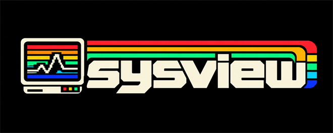
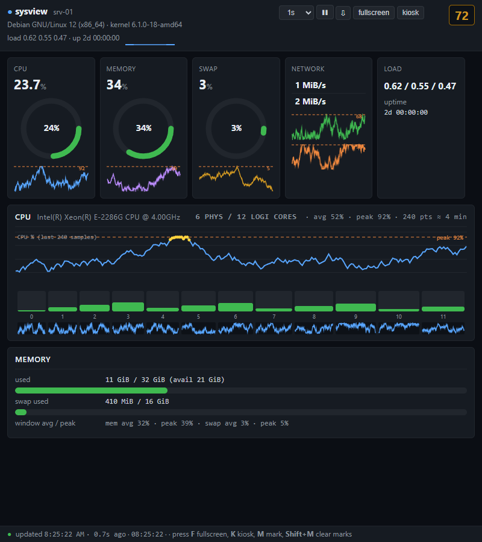
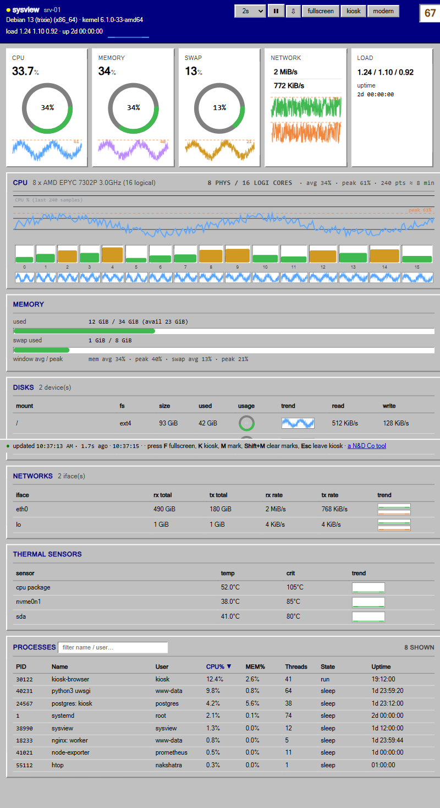

Terminal CLI
- Sections:
cpu,mem,procs,disks,net,temp— or the full overview --watchlive refresh,--jsonmachine-readable output- Sortable process table (
--sort cpu|mem...),--top N - Color modes
auto|always|never, unitsiec|si|bytes

★ welcome to the sysview home page ★Sysview is a portable, one-shot system stats viewer for Windows, Linux and macOS. The same tiny binary gives you a fast CLI overview, a live web dashboard and Prometheus metrics — with no runtime, no framework and no installer. Download once, run forever.
This page is sponsored & developed by N&D Co — Brand & Growth Agency

LIVE DASHBOARD, SERVED BY sysview serve — ONE SELF-CONTAINED PAGE, NOTHING TO INSTALL.
HOSTNAME SHOWN IS FAKE, FOR THE DEMO SHOT.

THE SAME DASHBOARD IN THE LEGACY RETRO THEME — PRESS LEGACY IN THE HEADER TO SWITCH, OR OPEN IT DIRECTLY WITH ?legacy=1. PURE CSS, NO EXTRA REQUESTS. DEMO DATA.
01 >> FEATURES
The serve command hosts the dashboard and
/metrics; the other commands render straight to your
terminal. Both share the same sampler, so the numbers always agree.
cpu, mem, procs, disks, net, temp — or the full overview--watch live refresh, --json machine-readable output--sort cpu|mem...), --top Nauto|always|never, units iec|si|bytes/metrics on the same port — Prometheus text 0.0.402 >> QUICK START
Download the binary for your OS from
Releases.
Verify against the SHA256SUMS on the release page, then run — that’s it.
C:\> REM download sysview-windows-x86_64.exe, then:
C:\> sysview-windows-x86_64.exe REM full overview
C:\> sysview-windows-x86_64.exe procs --top 20 REM top processes by CPU
C:\> sysview-windows-x86_64.exe serve REM dashboard on :8080Bind beyond loopback and the startup banner prints the ready-to-open URL with your token — just scan or type it on any phone, tablet or TV in the network.
$ sysview serve --bind 0.0.0.0 --port 8080 --token "$SECRET"
# open on any device: http://<server-ip>:8080/?token=$SECRET03 >> SECURITY
serve binds 127.0.0.1 unless you
explicitly pass --bind 0.0.0.0. Nothing is reachable
off-box by accident.
Set --token and every route (/,
/api/snapshot, /metrics) returns
401 without it. Token never appears in logs.
DynamicUser, ProtectSystem=strict,
NoNewPrivileges, private /tmp —
and Restart=always with MemoryMax=256M.
▶ NOTE: for HTTPS in front of a LAN deployment, put it behind a reverse proxy (nginx / Caddy). The service listens on one port and speaks plain HTTP — same story as any self-hosted app.
04 >> DEPLOY 24/7
The bundled installer targets Debian-family servers. It copies the binary, writes a hardened systemd unit, and prints the enabled at boot check when done.
# sudo BIND=0.0.0.0 PORT=8080 INTERVAL=1 MAX_PROCS=100 \
bash setup-debian.sh ./sysview-linux-x86_64-musl
# systemctl is-enabled sysview
enabled
# the startup banner prints the ready-to-open URL:
http://srv-01:8080/?token=●●●●| Result | What you get |
|---|---|
| ✓ BOOT | Auto-starts at boot (WantedBy=multi-user.target) |
| ✓ ALIVE | Survives crashes & kill -9 (Restart=always) |
| ✓ CAPPED | 256 MB memory ceiling, token on disk in root-only /etc/sysview/ |
| ▶ PORT | Open it once: sudo ufw allow 8080/tcp |
| ▶ LOGS | Watch it: sudo journalctl -u sysview -f |
05 >> PROMETHEUS
/metrics, scraped straight from the snapshotEvery metric is a gauge decoded from the same cached
snapshot the dashboard serves — no extra allocations while idle.
Point Prometheus at
http://host:8080/metrics?token=●●●●.
| Group | Metric name | Example value |
|---|---|---|
| Host | sysview_uptime_seconds | 172800 |
| Host | sysview_load1 / sysview_load5 / sysview_load15 | 0.42 / 0.38 / 0.35 |
| Host | sysview_ts_seconds | 1792108800 |
| CPU | sysview_cpu_usage_percent | 23.7 |
| CPU | sysview_cpu_logical_cores | 12 |
| Memory | sysview_memory_used_bytes | 12427878400 |
| Memory | sysview_memory_used_percent | 33.7 |
| Memory | sysview_swap_used_bytes | 4294967296 |
| Disk | sysview_disk_total_bytes{mount="/"} | 99965337600 |
| Disk | sysview_disk_used_bytes{mount="/"} | 44984401920 |
| Disk | sysview_disk_used_percent{mount="/"} | 45.0 |
| Disk | sysview_disk_read_bps{device="sda"} / sysview_disk_write_bps{device="sda"} | 524288 / 262144 |
| Network | sysview_net_rx_bps{interface="eth0"} | 65536 |
| Network | sysview_net_tx_bps{interface="eth0"} | 8192 |
| Network | sysview_net_rx_bytes_total{interface="eth0"} | 4294967296 |
| Network | sysview_net_tx_bytes_total{interface="eth0"} | 12884901888 |
| Procs | sysview_processes | 96 |
| Sensors | sysview_sensor_temperature_celsius{sensor="CPU Package"} | 47 |
C:\SCRAPE> NET USE /metrics - an example scrape, matching the demo dashboard above:
# HELP sysview_cpu_usage_percent Total CPU usage in percent.
# TYPE sysview_cpu_usage_percent gauge
sysview_cpu_usage_percent 23.7
sysview_memory_used_bytes 12427878400
sysview_disk_used_percent{mount="/"} 45.0
sysview_net_rx_bps{interface="eth0"} 65536
sysview_sensor_temperature_celsius{sensor="CPU Package"} 47
sysview_processes 9606 >> FAQ
No. It’s one self-contained static
binary per platform. Download, chmod +x (on Unix),
run. No Node, no Python, no system packages, nothing to configure.
The dashboard binds loopback by default and
only listens on 0.0.0.0 when you ask it to. Set a
token and every route is 401 without it. The startup
banner prints the ready-to-open URL with your token so you never
type it by hand. Lock the port in your firewall to keep it
LAN-only.
Around 2–4 MB private RSS at idle on a headless Debian 13 server, and the sampler pauses after 30 seconds with no viewer. It never retains command lines or environments between snapshots, so long-running instances don’t grow. The systemd unit adds a 256 MB ceiling as a hard cap.
Yes. The systemd unit is installed
enabled with WantedBy=multi-user.target
and Restart=always — it starts after the network
is online and revives within seconds of any crash, including
kill -9.
Yes — /metrics on the
same port, Prometheus text 0.0.4, token-protected, decoded from the
already-cached snapshot with zero per-poll allocations.
Put a reverse proxy (nginx, Caddy) in front of it for TLS. The service listens on a single port and speaks plain HTTP, like any other self-hosted tool — your proxy adds the certificate.
The full, dated log lives in the repo (CHANGELOG.md), and every GitHub Release carries the matching notes with binaries + checksums.
| Version | Date | What changed |
|---|---|---|
| v0.1.6 | 2026-10-09 |
|
| v0.1.5 | 2026-10-09 |
|
| v0.1.4 | 2026-10-09 |
|
| v0.1.3 | 2026-10-09 |
|
| v0.1.2 | 2026-10-09 |
|
| v0.1.1 | 2026-10-09 |
|
| v0.1.0 | 2026-10-09 |
|
One binary. Zero dependencies. Three platforms. Token-locked. Boot-proof systemd unit. The dashboard survives power outages — you just watch it come back.
Sponsored & developed by N&D Co — Brand & Growth Agency